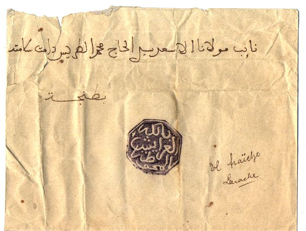
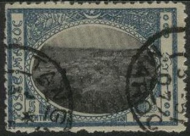

(cut from envelope of Fez)
Return To Catalogue -
Morocco local issues - Spanish Morocco
For British, French and German post offices in Morocco, see Cd 1.
Note: on my website many of the
pictures can not be seen! They are of course present in the
catalogue;
contact me if you want to purchase it.

(cut from envelope of Fez)

(Marakech)

These octagonal cancels were applied if a letter was prepaid. In the center, the name of the town is written in Arabic script. The cancels exist in many colours and are difficult to find on letters (they have mostly been cut from their envelopes by stamp collectors). The following towns issued these cancels: Azemmour, Casablanca, El Ksar, Fez, Larache, Marrakech, Mazagan, Meknes, Mogador, Rabat, Safi, Tanger and Tetouan.
1 m brown 2 m brown 5 m green 10 m red 25 m blue 50 m violet
These stamps have perforation 11. The 5 m and 10 m have the name of the engraver in the bottom left corner, the 2 m exists with or without this engraver name. All other values don't have the engraver name.
Value of the stamps |
|||
vc = very common c = common * = not so common ** = uncommon |
*** = very uncommon R = rare RR = very rare RRR = extremely rare |
||
| Value | Unused | Used | Remarks |
| 1 m | vc | c | |
| 2 m | vc | c | |
| 5 m | vc | c | |
| 10 m | c | c | |
| 25 m | c | c | |
| 50 m | c | c | |

(Postage due overprint: 'T' in a triangle on 10 m)
For stamps of Morocco issued for the French, British and German post offices and the stamps issued for the French Protectorate, see Cd 1.
The values 5 c green and black,10 c red and black, 20 c blue
and black, 30 c brown and black and 50 c violet and black exists,
5 more values were surcharged, examples:
(reduced sizes)


A variety of the 20 c exists: imperforated at the right 3
different cancels exist: among them Casablanca and Tanger.
These stamps were used on letters from the Spanish soldiers in Morocco. However, they were not issued officially, but came from a private source (the forgers Placido Ramon de Torres and Miguel Rodriguez Sanchez and a a post office employee, Grabriel Jumanez). These speculators distributed their stamps among the soldiers, who then pasted them on their letters. So genuinely used bogus stamps exist! At the same time they sold a large number of these stamps to stamp dealers. There are 53 different stamps with different names of the regiments. All three people were arrested in April 1894. (sources: 'Les timbres de phantaisie' of Georges Chapier, in french and 'Philatelic Forgers, their lives and works' by Varro E. Tyler).
{kind=link}
{kind=link}